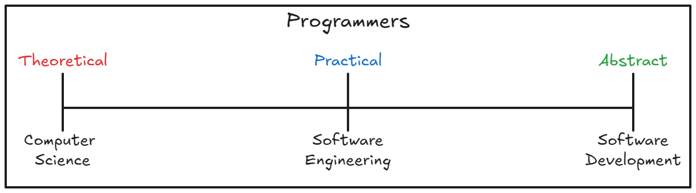

The Programming Spectrum
Ever notice how discussions in programming communities can get stuck in a frustrating "it depends," even on seemingly basic definitions? It often feels like we're all speaking slightly different languages, especially with new tools constantly emerging and the goalposts for understanding seemingly shifting. I believe this isn't just everyday noise; it's a symptom of a deeper, unacknowledged reality. The terms "software engineering" and "software development" have been diverging for some time, and frankly, for many, these terms carry significant, even personal, weight. In this piece, my aim is to re-establish and define these concepts based on what I've observed as distinct patterns and roles within our industry. This isn't a persuasive argument, but rather, an exploration of an idea - a combination of established concepts and fresh observations that, together, might offer answers where perhaps none have been clearly articulated yet.
Let's establish a few "axioms" to make sure we're on the same page. If you accept these concepts as true, then the conclusions I draw should logically follow.
Qualia (singular: quale) refers to those individual, subjective, conscious experiences - often described as the "what it is like" aspect of our mental states. Every person possesses a totally unique collection of qualia, and this inherent uniqueness begins with a simple, undeniable truth: no two individuals can occupy the exact same space at the exact same time. This fundamental physical reality means our experiences, and thus the "ingredients" we draw from for learning, are inherently distinct. Our brains naturally form weighted neural pathways, and these pathways truly shape our perception through these individual, unrepeatable experiences.
However, while each person's overall "qualia landscape" is unique, we often find shared qualia in specific, smaller "subnets" of experience (where input ≈ output). These pockets of shared understanding enable empathy and mutual comprehension, forming the basis where certain ideas can "just make sense" without needing explicit depiction. Conversely, when individuals operate within vastly different conceptual frameworks, their subjective experiences of the same activity can become profoundly divergent, making it truly difficult to find common ground and often hindering progress.
Many mature knowledge-based disciplines naturally grow beyond one person's understanding, and they tend to evolve across a spectrum that can be outlined by three "interpretation" markers.
1. Theoretical: First, we have the Theoretical interpretations. This is the entirely academic realm, where the foundational principles and core knowledge for some topic are established. This partition is about understanding the core "how" and "why" at the deepest level, often without immediate practical application in mind. Those deep in this field focus on if it's possible, rather than if it's currently possible.
2. Practical: Next comes the Practical interpretations. Here, theory meets the real world with real constraints. This stage involves systematically taking foundational principles and combining them with a deep understanding of what's currently possible. It's about translating abstract "how" and "why" into the design and creation of real components, systems, and structures.
3. Abstract: Finally, we arrive at Abstract interpretations. This stage builds on the outcomes of the applied theory to achieve large-scale results. It's about working with components, tools, and established practices to build complex systems efficiently, often completely abstracted away from the raw theoretical underpinnings or even the deep practical constraints.
To summarize, I've identified three markers of interpretation along a knowledge continuum, from precise to abstract. For any sufficiently large knowledge based subject, the limitations of human intelligence means you cannot exist across the whole continuum at a given time. Wherever you currently land on the continuum, you will likely have neighbors in the general area of understanding where you reside.
A Note on Movement: I've hinted at the idea of movement along this continuum but purposefully avoided a deep dive into it here. That discussion belongs in a broader exploration of qualia formation and transformation, which falls outside the scope of this particular framework. For the moment, our focus remains on an individual's current position along the continuum, rather than their potential for change.
Herein lies the core concept I'm trying to highlight. Programmers now find ourselves - like many before us - on a knowledge spectrum that has grown considerably large. "Mastering" the entire spectrum is frankly beyond human capabilities, as it requires deep understanding across often conflicting qualia. That's precisely why in other fields, we've divided and conquered, breaking things into distinct disciplines so people can genuinely succeed within their area of focus.
Let's look at a well-established knowledge-based field: electricity. Its theoretical interpretations are rooted in Electricity and Magnetism Physics. These concepts are then applied using practical interpretations by Electrical Engineers, who develop and research real-world electrical systems and components. Finally, the utilization, installation, maintenance, and repair of these systems and components are available via abstract interpretations applied by Electricians. Each occupation along this continuum plays a crucial role in enabling the wider population to access the benefits of electricity in our homes.
Let's now translate this idea to the world of programming, mirroring our electricity continuum and its inherent qualia distinctions.
Here, Computer Science represents the theoretical interpretation, delving into the foundational algorithms, data structures, and computational principles that underpin all software. Using our framework, I would argue that Software Engineering embodies practical interpretations, systematically designing, architecting, and optimizing software systems and components, effectively translating theoretical concepts into functional ones. Finally, the Software Developer operates with abstract interpretations, focusing on the hands-on implementation, debugging, and maintenance of specific applications and features. Modern programming languages and advanced IDEs significantly empower this role. Like the Electrician, their strength lies in the tangible realization and ongoing care of the system, often applying intuitive problem-solving to make the code work effectively in diverse, real-world scenarios. This enables them to build and manage entire full-stack applications, a capability that has become increasingly accessible and prevalent over time.
And so, that's the core idea. It's a perspective I believe isn't as widely recognized as it should be, yet it carries profound implications when we consider its ramifications, as we will do now. If you find yourself strongly disagreeing at this point, that's perfectly understandable. I encourage you to continue to the examples in the following sections; perhaps real-world phenomena might enable the concept to shine through (or at least, provide land for which our ideas may duel).
Just as different trades require specialized tools, programming languages serve as the essential tools for software creation. However, it's crucial to understand that these tools aren't qualia-defining in themselves; rather, their design philosophies and practical applications interact with, and are shaped by, the distinct qualia of programmers. This complex interplay often explains why certain languages provoke such strong opinions - for or against - particularly when a tool's design is misaligned with a user's existing interpretation. Despite passionate debates over their perceived "goodness," some languages find widespread success, and our framework illuminates the underlying reasons for this phenomenon.
Consider JavaScript, a language frequently mocked for its inconsistencies and quirks, yet undeniably triumphant in its widespread adoption. While its peculiarities might chafe those with a purist's eye, its remarkable simplicity for rapidly achieving functional results is its superpower. For the Software Developer, whose strength lies in abstract interpretations, JavaScript is a near-perfect weapon; easy to pick up and deliver large results quickly. The logical inconsistencies matter not to those without the "qualia" to recognize them.
Languages like Assembly and C firmly reside in the realm of the Software Engineer. These tools demand an intimate, granular understanding of how a system operates. For the engineer whose qualia is rooted in practical interpretations, being as close to the "real-world" as possible isn't merely helpful - it's absolutely essential for their role in meticulously crafting how a system executes.
At the other end of this spectrum lies Haskell, often referred to as a "white paper" language due to its strong connection to Lambda Calculus. Its design principles prioritize mathematical rigor, immutability, and formal verification, making it a natural fit for academics with theoretical interpretations, exploring the foundational proofs in computation.
Python offers versatility, demonstrating that these tools are not tied to points on the spectrum, but rather, how they are used dictate its utility across our continuum. Highly readable syntax, often likened to "pseudocode," makes it an exceptional tool for rapid prototyping and abstract problem-solving, aligning well with the Software Developer's focus on efficient implementation. This same clarity and simplicity also makes it a powerful vehicle for quickly demonstrating proofs and building out theoretical concepts, also finding a home in Computer Science. However, it's crucial to note that while both Computer Scientists and Software Developers may wield Python, the user's "qualia" dictate respective theoretical and abstract interpretations; Not the tool.
C#, C++, and Rust represent ranges that sit between practical and abstract interpretations. For Software Developers, these tools offer significant abstractions, enabling the rapid and straightforward development of large projects. Conversely, for Software Engineers, these languages are just a few layers removed from the real-world, providing access to low-level control when needed. Mastering these "ranged" "intermediate" languages, however, is a profound undertaking. An abstract interpretation will quickly feel lost when confronting issues rooted in the deeper implementation details, while practical interpretations might be overwhelmed by the sheer scale and complexity of managing larger projects. Ultimately, these languages are most effective, and truly flourish, in the hands of those who dedicate years the codebase - the tool being just another vehicle for understanding a codebase.
These varied examples illustrate how the design philosophies and practical applications of different programming languages interact with the distinct qualia. Some tools, by their very design, may guide users toward particular interpretations (causing distress for those unaligned with said interpretation), while others offer a broader canvas where the user's existing qualia predominantly dictates their approach. After examining these diverse examples through the lens of my framework, we can clearly see why certain phenomena emerge within our professional communities. Crucially, while tools may have an intended design, their actual application and effectiveness are deeply dependent on the interpretations of their wielders. For example, a Computer Scientist interacting with JavaScript operates from a vastly different qualia than a Software Developer, leading to divergent understandings of this same tool. This fundamental difference in interpretation likely fuels many common disagreements over standards and patterns;
yes, I'm specifically thinking of the "return types in TypeScript" debates.
This framework sheds light on these frictions and misunderstandings that often feel elusive in current discussions.
The rapid ascent of Artificial Intelligence, particularly Large Language Models, has sparked considerable anxiety within the programming community regarding job displacement. However, viewed through the lens of our "Understanding Continuum," the perceived threat of AI tools "removing" someone's job is almost entirely dependent on where that job lands on the spectrum.
Those operating within theoretical and practical interpretations, exist in a world of building what hasn't been built before, pushing the boundaries of computational understanding and system design. This space, fundamentally about novel creation and deep problem-solving, is not where AI currently excels. AI's strength lies in pattern recognition and efficient execution of known tasks, not in originating entirely new paradigms or solving truly unprecedented challenges.
Conversely, for the Software Developer operating primarily at the abstract level, AI is rapidly becoming the next iteration of tooling, much like how Integrated Development Environments (IDEs) with features like autocomplete and sophisticated refactoring made building large-scale projects feasible. Consider this: how many jobs were truly taken because JetBrains built IntelliJ, or because Git simplified version control? The conflict isn't new; it's a recurring pattern where abstraction layers evolve, making certain tasks more efficient.
It's crucial to be clear: AI isn't "magic." These are powerful tools designed to assist, and their helpfulness is currently inversely proportional to the level of abstraction. The more abstract the task - the more it involves combining existing components, boilerplate generation, debugging common patterns, or translating high-level intent into functional code - the heavier AI's helpfulness becomes. AI assists in automating the abstract realization and ongoing care of systems, allowing Software Developers to be even more productive in building full-stack applications with remarkable speed. This augmentation, rather than replacement, frees up cognitive load for developers to focus on higher-level problem-solving and feature development, solidifying their role as the skilled "Electricians" of the software world. Ultimately, while AI tools may lead to fewer developers needed per individual project, this efficiency gain also translates to a net increase in job opportunities, as companies face lower barriers to entry for establishing and expanding their digital presence.
Another telling emergent example of our industry's unacknowledged specialization is the proliferation of hyper-specific titles, such as "React Developer." In the world we've created, Software Developers increasingly feel the need to distinguish themselves amidst a growing sea of individuals holding the same generic title. Identifying oneself primarily by the specific tools or frameworks one can use - be it React, Angular, Vue, or a particular cloud platform - is a symptom of this inability to formally establish clear differences between software engineering and software development.
If a "Software Engineer" is primarily concerned with the deep theoretical underpinnings and the practical design of systems, their identity isn't defined by a transient framework but by their understanding of foundational principles. An Electrical Engineer doesn't call themselves a "Siemens PLC Engineer"; they are an Electrical Engineer who uses Siemens PLCs. Similarly, a Software Engineer might specialize in distributed systems or compiler design, and the tools they use are secondary to their domain of expertise.
However, for the Software Developer, whose strength lies in the abstract application of established tools and practices to build complex systems efficiently, proficiency with specific, powerful frameworks like React is paramount to their daily work and market value. Their "qualia" is profoundly shaped by the nuances of these tools, making it logical for them to identify with the ecosystem in which they operate. The "React Developer" phenomenon, therefore, is not a failure of individual specialization, but rather a natural and necessary response by Software Developers to signal their concrete, immediately applicable skill set within a profession that desperately needs more refined vocational pathways. It highlights the market's organic push towards recognizing the value of expertise at the abstract level, even if our formal titles haven't caught up.
Foreword: Before diving into this section, it's really important to acknowledge that discussions around education and professional pathways can be deeply personal and, frankly, contentious. We're venturing into territory where existing paradigms meet my theoretical framework. The real-world examples I'm about to explore are absolutely not meant to devalue anyone's current journey or achievements. Rather, the aim is to shed light on phenomena that often go unexplained within our industry. Implicit in this discussion is a vision for an ideal world - one where becoming a highly competent Software Developer doesn't necessarily necessitate hundreds of thousands of dollars in student debt, and where educational pathways are more clearly aligned with the specific "qualia" and knowledge required for each role. This section seeks to provide a fresh perspective, not to dictate a single, rigid path, but to open a dialogue about how we can better educate and empower all programmers.
Understanding how our qualia are formed is crucial to discussing education. As we agreed in our axioms, brains naturally build weighted neural pathways, making established perspectives pretty resistant to change. Reshaping this qualia is a slow, methodical process that requires consistent effort (the "by rote" method). Alternatively, it can be forced with more rapid transformation (usually this is from "trauma" - more to explore here, but for now, this is our axiom). Intentional education plays a critical role in aligning or expanding our individual qualia, allowing us to perceive and interact with complex domains in new ways. This is particularly evident when we consider how individuals acquire the distinct knowledge bases required for Theoretical , Practical , and Abstract programming.
A common observation within programming circles is the celebrated "self-taught Software Engineer." Often, when people refer to these individuals, they are, by my framework, speaking of highly talented Software Developers. These are indeed brilliant minds, capable of incredible feats of creation and problem-solving. However, their foundational knowledge, particularly concerning the deeper "how" and "why" of computing, may often be less comprehensive. While such a developer might have dedicated 10,000 hours to mastering C# and building intricate applications in the cloud - often leveraging powerful frameworks and IDEs to do so - they might not be able to articulate precisely how their high-level code translates into the granular instructions a computer executes. Their learning, by its nature, has occurred primarily at the abstract level, focusing on applying existing components and patterns rather than dissecting their underlying mechanisms.
This brings me to the distinct educational demands of Computer Science and Software Engineering. These fields delve into theoretical principles and practical system design that aren't just intuitively discovered or naturally occurring. They represent decades of rigorous development by some of the greatest mathematical and logical minds. It is profoundly unlikely that any individual, through sheer self-application alone, could independently re-derive or fully internalize the breadth and depth of knowledge encompassing topics like advanced algorithms, data structures, compiler design, or operating system principles. These are structured disciplines, built on cumulative, non-obvious insights that necessitate a formal, guided journey of discovery and rigorous critical thinking to truly grasp.
This formal journey, particularly within a university setting, often involves a significant degree of intellectual stress. While discomforting, this stress is a vital catalyst for neuroplasticity; without it, the brain simply has less impetus to dismantle or significantly modify its existing worldview. Those who navigate this rigorous "ringer" of brain reshaping emerge with a fundamentally different way of perceiving and interacting with the world. They possess a practical or theoretical qualia that enables them to approach problems from a foundational perspective, often invisible to those whose experiences have primarily been at a higher level of abstraction. It's also something I find quite harmful for individuals with "Software Engineering" oriented qualia to be constantly told their inability to "just do" or quickly build full-stack applications with abstract tools is a personal failure. Their expertise truly lies in a different, but equally vital, area. Software Development, on the other hand, is much more accessible through self-study and focused application. Learning to build a web application over a weekend, for instance, is entirely feasible because it primarily involves acquiring and applying abstract knowledge - learning specific syntax, frameworks, and patterns - without inherently demanding a complete re-wiring of one's fundamental conceptual understanding.
Ultimately, understanding these distinct educational pathways is key to appreciating the diverse strengths and perspectives within our programming community. It helps explain why different learning environments cultivate different types of qualia, and in turn, why certain roles are best suited to specific approaches of knowledge acquisition. Perhaps by recognizing these distinct needs, we can foster a future where Software Development truly emerges as a recognized trade, akin to that of an Electrician. This could empower countless individuals to gain industry-relevant skills without the immense financial burden or the perceived need to master theoretical concepts they may never directly apply in their daily work - addressing the common frustration of those with engineering degrees who feel over-qualified for much of the industry's developer work.
It bears repeating: this discussion on education is not a pronouncement on prestige or a judgment of individual merit. Rather, it's an exploration of alignment. The most effective and fulfilling educational journeys are those that cultivate the specific qualia and knowledge base one is truly driven to master. In my own experience, my formal education, while rigorous and invaluable, often feels somewhat decoupled from the daily realities of my professional role. This isn't to say my education didn't prepare me for the world; instead, it highlights that the role I often find myself in may not precisely align with the theoretical and practical foundations I deeply engaged with. This distinction also has a critical implication for how we shape future learning: it is vital that we preserve the rigorous, foundational education of Software Engineering - the deep dive into theoretical principles and systemic design. Simultaneously, we must officially recognize and embrace Software Development education, mirroring the effectiveness we already see in focused programs and bootcamps, which often leverage the power of modern tools. When learning is directed by genuine purpose, it sharpens one's abilities, transforming them into a formidable force within a particular realm of software creation, irrespective of traditional labels or external validation.
The journey through these concepts - Shared Qualia and the Understanding Continuum - reveals a crucial truth: the landscape of programming has matured far beyond a single, monolithic definition. What I've explored isn't about rigid labels or creating hierarchies; it's about fostering a deeper, more empathetic understanding of the distinct experiences and expertise that drive our industry forward. The "it depends" reflex, so prevalent in our daily discussions, often stems not from a lack of definitive answers, but from a fundamental divergence in how we perceive and interact with the very fabric of software, heavily influenced by the abstraction provided by modern tools.
Our industry, much like other established disciplines that have grown to immense scale, is naturally specializing. This evolution is a sign of our collective sophistication, not a limitation. It means recognizing that while all programmers contribute to the grand endeavor of building technology, their qualia and the knowledge bases they operate within can be profoundly different. It's important to note that I think a lot of people currently operate somewhere along the spectrum between a Software Engineer and a Software Developer, blending aspects of both roles, and that's perfectly okay. This proposed framework, therefore, isn't an attempt to segment, but to illuminate, allowing us to appreciate the unique strengths each role brings to the table, and to avoid the harmful notion that one's specialized expertise makes them deficient in another area.
Ultimately, by embracing these distinctions, we can bridge the often-unseen gaps that lead to friction and misunderstanding. Imagine a future where educational paths align more clearly with individual aptitudes and career aspirations, where job descriptions accurately reflect required expertise, and where teams collaborate with a clearer understanding of each other's inherent strengths. This isn't just about clearer communication; it's about building a more cohesive, efficient, and ultimately, more innovative software community, where every mind can truly flourish in its chosen domain.